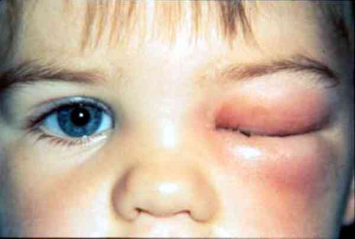
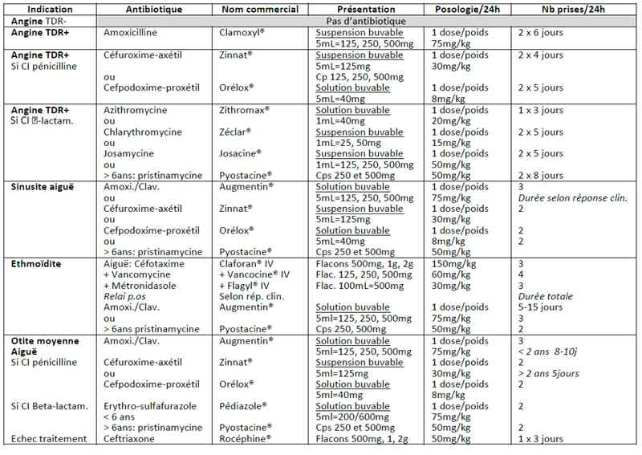
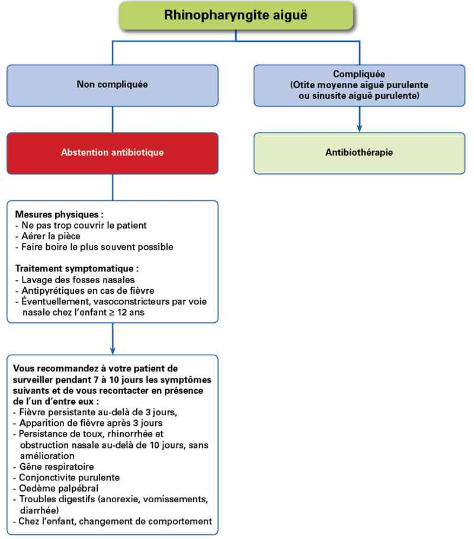
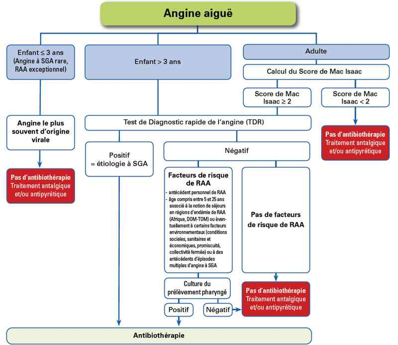
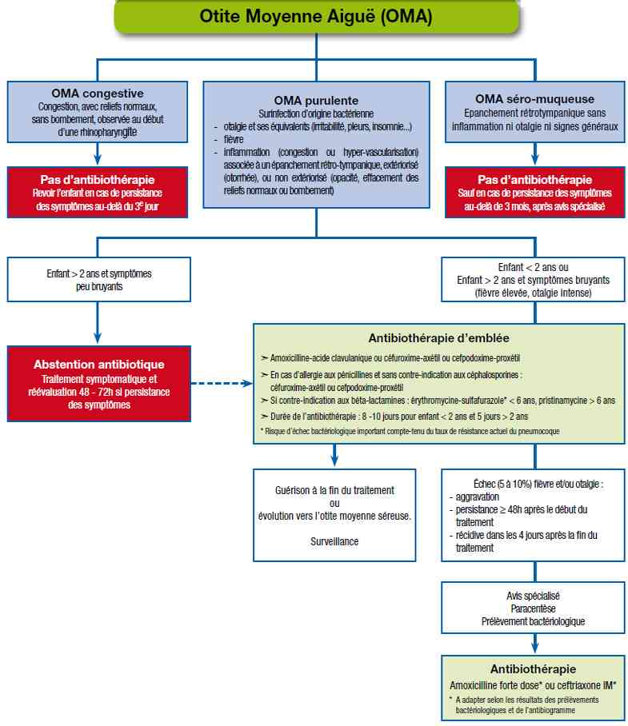

Bienvenue Sur Medical Education
Infections respiratoires hautes de l'enfant
EnfantSpécialité : infectieux / orl / pédiatrie / pneumologie /
Points importants
- Les infections respiratoires hautes sont très fréquentes chez l’enfant, du fait de la fratrie et du mode de vie actuel en collectivités (crèches, école maternelle, école primaire, etc.)
- Bien que la majorité d’entre elles sont virales et ne justifient d’aucun traitement antibiotique (« les antibiotiques, ce n’est pas automatique ! »), la question d’une surinfection bactérienne notamment par Streptococcus pneumoniae et Hemophilus influenzae, malgré la vaccination, est récurrente avec la difficile question d’initier une antibiothérapie probabiliste adaptée pour une durée optimale, ce qui justifie l’application des recommandations de bonne pratique qui soient périodiquement réévaluées
-
En effet, la crainte est celle d’une bactériémie occulte avec possible méningite bactérienne qui doit être balancée avec la sur-consommation d’antibiotiques et la sélection de bactéries multi-résistantes
Présentation clinique / CIMU
Les infections respiratoires hautes correspondent à plusieurs tableaux sémiologiques distincts
- Rhinopharyngite
- Angine ou pharyngite
- Sinusite aiguë
- Ethmoïdite aiguë
- Otite moyenne aiguë
SIGNES FONCTIONNELS
Généraux
- Fièvre
Spécifiques
-
Rhinopharyngite aiguë :
- écoulement nasal clair d’origine virale
- la purulence de l’écoulement et/ou la fièvre ne signent pas une surinfection bactérienne
-
Angine ou pharyngite :
- douleur pharyngée (odynophagie) ou à la déglutition
- une fièvre associée ne signe pas la nature bactérienne de l’angine mais son caractère inflammatoire
-
Sinusite aiguë (âge > 3 ans) :
- mouchage nasal clair ou purulent
- douleur sinusienne en cadre
-
Ethmoïdite :
- fièvre élevée avec frissons
- gonflement palpébral douloureux
-
Otite moyenne aiguë :
- fièvre
- otalgie parfois très vive. Celle-ci s’exprime chez le nourrisson par des pleurs incessants et oblige à un examen systématique des tympans devant toute fièvre du nourrisson
CONTEXTE
Contage
- Très souvent, contage familial (fratrie), à la crèche ou à l’école
Des végétations adénoïdes hypertrophiées ou chroniquement infectées favorisent la survenue d’otites à répétition en gênant la dynamique tubaire vers l’oreille moyenne, et font discuter les indications d’adénoïdectomie
Des amygdales hypertrophiées ou chroniquement infectées favorisent la survenue d’angines à répétition ou de phlegmons amygdaliens, et font discuter les indications d’amygdalectomie qui doivent être retreintes avant l’âge de 4-5 ans
EXAMEN CLINIQUE
Rhinopharyngite
- Ecoulement nasal clair ou purulent
- Une fièvre est inhabituelle au cours d’une rhinopharyngite aiguë et doit faire examiner les tympans
Angine ou pharyngite
- L’aspect de la gorge, notamment des amygdales, cryptiques ou rouge, n’est pas suffisant pour distinguer une angine virale d’une bactérienne. Seul, un test de diagnostic rapide (TDR - Streptatest®) permet de trancher
- Par contre, des amygdales hypertrophiées revêtues d’un enduit pultacé blanchâtre avec des fausses membranes évoquent une mononucléose infectieuse, ce d’autant que s’y associent des adénopathies cervicales ou multiples, une hépato-splénomégalie et une fièvre élevée avec asthénie
- La survenue d’une éruption cutanée morbilliforme prurigineuse ou urticarienne, quelques jours après la prise d’un traitement antibiotique par beta-lactamines ajoute à la présomption diagnostique
Sinusite aiguë
- Jetage nasal puriforme
- Gonflement palpébral inférieur
- Douleur à la pression sinusienne
Ethmoïdite aiguë
- Gonflement palpébral unilatéral ou bilatéral mais souvent asymétrique
- Fièvre élevée et frissons
- Un gonflement bleuté de la veine ethmoïdale au coin interne de l’œil signe une thrombophlébite ethmoïdale
 _729 Photo Oedème palpébral inflammatoire unilatéral
Otite moyenne aiguë
-
Seul un examen otoscopique soigneux peut distinguer :
-
l’otite congestive :
- congestion sans bombement tympanique (le triangle lumineux fait par la réflexion de la lumière de l’otoscope sur la membrane tympanique est estompé par son infiltration mais est conservé)
- associée à une rhinopharyngite virale spontanément résolutive
-
l’otite moyenne aiguë :
- inflammation tympanique avec épanchement rétro-tympanique (le triangle lumineux a disparu du fait du bombement tympanique), extériorisé (perforation et écoulement purulent dans le conduit auditif externe) ou non
- associée à une otalgie, une hypoacousie et une fièvre
-
l’otite séro-muqueuse :
- épanchement rétrotympanique séromuqueux, sans inflammation, ni otalgie, ni fièvre
-
l’otite congestive :
EXAMENS PARACLINIQUES SIMPLES
Test de diagnostic rapide (TDR) (Streptatest®)
Il doit être pratiqué devant toute angine érythémateuse ou érythémato-pultacée (spécificité 95%, sensibilité 90%)
CIMU
- Rhinopharyngite : tri 5
- Angine ou pharyngite : tri 5
- Sinusite aiguë : tri 4
- Ethmoïdite aiguë : tri 3
- Otite moyenne aiguë : tri 4-5
Signes paracliniques
BIOLOGIQUES
Rhinopharyngite aiguë
- Aucun
Angine ou pharyngite
- Aucun, sauf en cas de doute avec une angine à fausses-membranes : NFS + plaquettes (hyperlymphocytose avec cellules mononuclées hyperbasophiles), MNI-test et sérologie EBV
Sinusite aiguë
- Aucun, sauf en cas de doute avec une complication septique : hémoculture et ponction sinusienne (isolement d’un germe et antibiogramme)
Ethmoïdite aiguë
- Hémocultures (1 à 2 à intervalles rapprochés afin de ne pas retarder l'antibiothérapie, volume de sang = 2mL < 2ans – 5mL entre 2 et 10 ans – 10mL > 10ans)
- NFS + plaquettes
- CRP/PCT
Otite moyenne aiguë
- Aucun, sauf en cas d’échec thérapeutique : paracentèse pour isolement d’un germe et antibiogramme
IMAGERIE
Rhinopharyngite aiguë
- Aucune
Angine ou pharyngite aiguë
- Aucune, sauf en cas de phlegmon amygdalien ou d’abcès rétro-pharyngien : radio de crâne de profil, voire scanner cérébro-facial
Sinusite aiguë
- Radiographies de sinus ou scanner cérébro-facial (les sinus maxillaires sont perméables vers 18 mois – 2 ans et développés vers 5 ans ; les sinus frontaux perméables vers 5-6 ans et développés vers 12 ans)
Ethmoïdite aiguë
- Un gonflement bleuté de la veine ethmoïdale au coin interne de l’œil signe une thrombophlébite ethmoïdale et incite à réaliser un scanner en urgence
- Scanner cérébral sans et avec injection (les cellules ethmoïdales sont perméables dès la naissance)
Otite moyenne aiguë
- Aucune, sauf en cas de complication à type de mastoïdite qui se manifeste cliniquement par une otite traînante et une tuméfaction douloureuse mastoïdienne : scanner cérébro-facial et centré sur les rochers
Diagnostic étiologique
Rhinopharyngite aiguë
- Rhinovirus, VRS, influenzae et para-influenzae, etc.
Angine ou pharyngite
- Beaucoup sont virales
- Chez l’enfant > 3 ans, ~20% des angines aiguës sont dues à streptocoque du groupe A. Comme la clinique ne permet pas de différentier les deux, il faut utiliser un test de diagnostic rapide devant toute angine érythémateuse ou érythémato-pultacée (spécificité 95%, sensibilité 90%)
Sinusite aiguë
- Beaucoup sont virales
- Possibilité de surinfection bactérienne notamment par S. pneumoniae, Streptocoque A, H. influenza, parfois anaérobies
Ethmoïdite aiguë
- Beaucoup sont bactériennes : S. pneumoniae, Staphylococcus aureus, anaérobies
Otite moyenne aiguë
- Beaucoup sont virales
- Néanmoins, une surinfection bactérienne est impliquée dans 60-70% des cas. Cependant, la guérison spontanée survient dans environ 80%
- Le risque de complications infectieuses graves (bactériémie, méningite, mastoïdite) est plus important avant l’âge de 2 ans, justifiant la différence entre antibiothérapie d’emblée ou différée entre ces deux tranches d’âge.
Traitement
TRAITEMENT PREHOSPITALIER/INTRAHOSPITALIER
Stabilisation initiale
- Traitement de la douleur et de la fièvre
- Le traitement antibiotique sera prescrit dans la majorité des cas au domicile
Suivi du traitement
-
Rhinopharyngite aiguë :
- l’antibiothérapie n’est pas recommandée, sauf en cas de complications supposées bactériennes (otite moyenne aiguë, sinusite). Elle n’accélère pas la guérison et ne prévient pas la survenue de complications
-
Angine ou pharyngite :
- en cas de TDR négatif, aucune antibiothérapie n’est recommandée
-
en cas de TDR positif, l’antibiothérapie est recommandée :
- amoxicilline per os
- l’association amoxicilline-acide clavulanique et le céfixime n’ont plus d’indication dans l’angine à streptocoque du groupe A
- allergie aux pénicillines sans contre-indication aux céphalosporines : céphalosporines de 2e ou de 3e génération par voie orale : céfuroxime-axétil per os ou cefpodoxine-proxétil per os
-
en cas d’allergie aux beta-lactamines, le taux actuel de résistance des SGA aux macrolides en France (~20%) oblige à réaliser un prélèvement de gorge pour tester la sensibilité aux macrolides (délai de réponse ~48h) :
- < 6 ans : azithromycine per os ou clarithromycine per os ou Josamycine per os
- > 6 ans : pristinamycine per os
- la persistance des symptômes après 3 jours doit conduire à réexaminer l’enfant
- ni les AINS ni les corticoïdes par voie générale ne sont recommandés, à la différence des antipyrétiques et des antalgiques qui peuvent être utilisés
-
Sinusite aiguë :
- d’origine souvent virale, la possibilité d’une surinfection bactérienne et de complications graves oblige à discuter l’antibiothérapie
-
l’antibiothérapie est recommandée :
- dans les formes aiguës sévères (fièvre > 39°C, céphalées, rhinorrhée purulente, œdème péri-orbitaire)
- dans les formes prolongées (durée des symptômes > 10 jours), en présence de facteurs de risque tels que : asthme, cardiopathie, drépanocytose
- en première intention : amoxicilline-acide clavulanique per os ou cefpodoxime-proxétil per os
- si contre-indication aux beta-lactamines : pristinamycine per os chez l’enfant > 6 ans
- ne sont plus recommandés : pénicilline A, macrolides, C1G, cotrimoxazole
- l’utilité des AINS et des corticoïdes par voie générale et locale n’est pas démontrée, hors sinusite hyperalgique
-
Ethmoïdite aiguë :
- sa nature bactérienne et la possibilité de thrombophlébite septique obligent à une antibiothérapie rapidement bactéricide
-
l’antibiothérapie préconisée d’emblée en IV est l’association :
- cefotaxime IV + fosfomycine IV (en l’absence de fosfomycine, vancomycine IV) + métronidazole IV, entre 3 et 15 jours selon la réponse clinique
- relais per os par amoxicilline-acide clavulanique ou pristinamycine (> 6 ans)
-
Otite moyenne aiguë (OMA) :
- après 2 ans, l’antibiothérapie n’est pas systématiquement recommandée, sauf en cas de symptomatologie bruyante (fièvre élevée, otalgie intense), mais elle implique une ré-évaluation clinique de l’enfant à 48-72h sous traitement symptomatique
-
avant 2 ans, l’antibiothérapie est recommandée d’emblée :
- en première intention : amoxicilline-acide clavulanique per os ou céfuroxime-axétil ou cefproxime-proxétil
- en cas d’allergie aux pénicillines, sans contre-indication aux céphalosporines : céfuroxime-axétil ou cefpodoxime-proxétil per os
- en cas de contre-indication aux bêtalactamines : érythromycine-sulfafurazole (enfant < 6 ans) per os / pristinamycine (enfant > 6 ans) per os
- la durée de l’antibiothérapie est généralement de 8 à 10 jours chez les enfants < 2 ans et de 5 jours chez ceux > 2 ans
-
l’échec du traitement antibiotique est défini par la persistance des symptômes > 48h après le début du traitement antibiotique, ou leur réapparition dans les 4 jours suivant la fin du traitement, associés à des signes otoscopiques d’OMA purulente :
- paracentèse avec prélèvement bactériologique, suivie d’un changement du traitement antibiotique en fonction du premier antibiotique utilisé et des bactéries isolées
- les deux antibiotiques actifs sur les pneumocoques résistants sont : l’amoxicilline per os à forte posologie (150 mg/kg/j en 3 prises) / la ceftriaxone IV
- chez l’enfant vacciné par le Prévenar®, les échecs de traitement liés à un Haemophilus influenzae ne sont pas rares, et le traitement par cefuroxime-axetil (Orelox®) est un « pari raisonnable » (Dr. Robert Cohen - ACTIV)
- un traitement antalgique et antipyrétique est recommandé
- l’utilité des AINS et des corticoïdes n’est pas démontrée
- les gouttes auriculaires contenant des antibiotiques n’ont aucune indication dans l’OMA et sont réservées au traitement des otites externes
-
Otite congestive (congestion sans bombement tympanique) :
- l’antibiothérapie n’est pas recommandée, mais l’enfant doit être revu si les symptômes persistent > 3 jours
-
Otite séromuqueuse (épanchement rétrotympanique, sans inflammation ni otalgie, ni fièvre) :
- l’antibiothérapie n’est pas recommandée, sauf en cas de persistance des symptômes > 3 mois et après avis ORL
-
Tympans mal vus ou non vus : l’antibiothérapie ne doit pas être prescrite à l’aveugle
- avant 2 ans : la visualisation des tympans est nécessaire et le recours à l’ORL recommandé
- après 2 ans : en l’absence d’otalgie, le diagnostic d’OMA purulente est très improbable
MEDICAMENTS
- Antibiothérapie des infections respiratoires supérieures de l’enfant
 _730 Tableau Antibiothérapie des insuffisances respiratoires supérieures de l'enfant
Surveillance
Rhinopharyngite
- Aucune
Angine ou pharyngite
- Aucune
Sinusite
- Aucune
Ethmoïdite
- Hospitalisation
- Surveillance clinique locale oculaire et neurologique
- Surveillance régression des signes infectieux cliniques (apyrexie) et biologiques (NFS, CRP)
Otite moyenne aiguë
- Revoir à 48h les enfants > 2 ans chez lesquels l’antibiothérapie est différée
- Revoir à 48h les enfants < 2 ans pour s’assurer de la bonne réponse au traitement antibiotique et ceux chez lesquels survient une otorrhée spontanée
Devenir / orientation
- Un changement de mode de vie de l’enfant, de la crèche vers une garde à domicile, peut diminuer significativement la fréquence des infections des voies aériennes supérieures avec un bénéfice tant pour l’enfant que pour la mère et la collectivité.
Ethmoïdite
- Hospitalisation
Mécanisme / description
- Les infections des voies respiratoires supérieures sont les affections plus fréquentes chez l’enfant. Elles prennent généralement la forme d’une rhinite ou d’une grippe. Elles sont souvent associées à d’autres affections, telles que l’otite, la trachéite, la laryngite, la sinusite, la pharyngite et elles s’accompagnent souvent de toux et de congestion nasale.
Algorithme
- Algorithme de prise en charge d’une rhinopharyngite
 _731 Algorithme Algorithme : prise en charge d'une rhinopharyngite
- Algorithme de prise en charge d’une angine aiguë
 _732 Algorithme Algorithme de prise en charge d'une angine aiguë
- Algorithme de prise en charge d’une otite moyenne aiguë
 _733 Algorithme Algorithme de prise en charge d'une otite moyenne aiguë
Bibliographie
- Antibiothérapie par voie générale en pratique courante dans les infections respiratoires hautes de l’adulte et de l’enfant. Recommandations. Octobre 2005.
- François M, Mariani-Kurkdjian P, Dupont E, Bingen E. Ethmoïdites extériorisées de l’enfant : à propos d’une série de 125 cas. Arch Pédiatr 2006 ; 13 :6-10.
- Majundar S, Wu K, Bateman ND, Ray J. Diagnosis and management of otalgia in children. Arch Dis Child Educ Pract Ed 2009; 94:33-6.
- Thompson PL, Gilbert RE, Long PF, Saxens S, Sharland M, Wong ICK. Effects of antibiotics for otitis media on mastoidis in children: A retrospective cohort study using the United Kingdom General Practice Research Database. Pediatrics 2009; 123:424-30.
-
Cohen R, Lévy C, Bonnet E, et al. Dynamic of pneumococcal nasopharyngeal carriers in children with acute otitis media following PCV7 introduction in France. Vaccine 2009, May 30
Auteur(s) : Jean-Christophe MERCIER, Edouard BINGEN